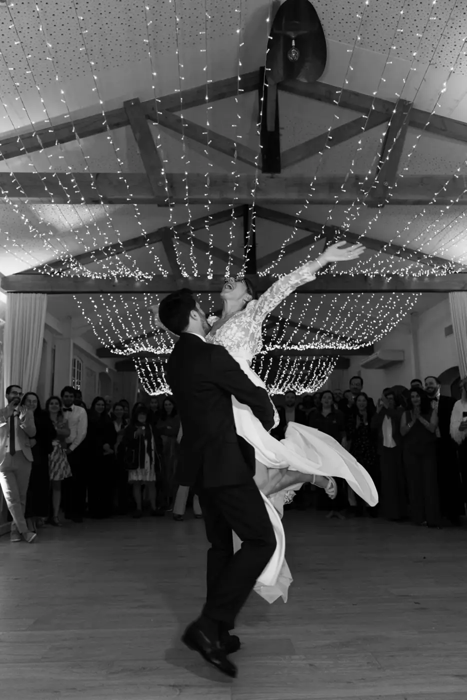
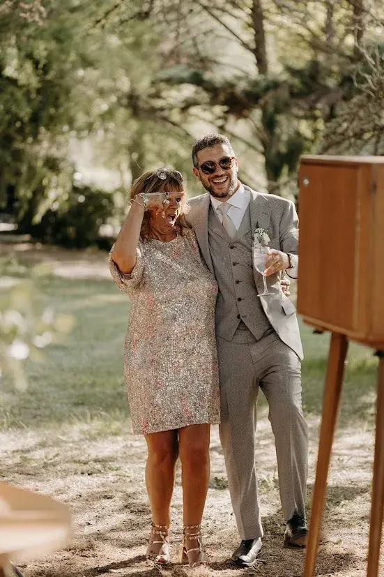
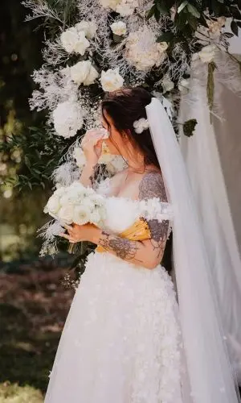

Emotion: the true secret of a memorable wedding
When a couple starts planning their wedding, one question often comes up, sometimes without even being put into words: how do we make this day truly unforgettable?
Between choosing the venue, the wedding decor, the caterer, the dress, the flowers, the stationery, the entertainment and the set design, it is easy to think that a wedding's success rests mainly on how it looks or on the budget behind it.
Yet when you ask guests about a wedding they attended several years earlier, they rarely remember the exact menu or the style of chairs under the marquee.
What they do remember perfectly is the emotion they felt when the couple exchanged their vows, a particularly moving speech or a fit of laughter shared by all the guests.
That is precisely what separates a pleasant wedding from a truly memorable one.

Why do some weddings stay with people for years?
We naturally tend to believe that memories are built around material things. Yet many neuroscience studies show that our brain mainly retains the emotions associated with an event.
This is particularly visible in the world of weddings.
A high-end wedding with spectacular decor and a large budget doesn't necessarily guarantee a lasting memory. Conversely, a more intimate wedding, organised with sincerity and authenticity, can stay in people's minds for decades.
The reason is simple: emotions create a deep connection.
When guests laugh, cry, are surprised or deeply moved, their brain treats these moments as important. They then become lasting memories.
New trends
In recent years, couples' expectations have changed considerably.
Today, couples want an elegant and refined wedding, but above all they are looking for authenticity and personalisation.
Standardised trends are gradually giving way to unique celebrations that truly resemble the couple.
Guests are sensitive to this change too.
They no longer want only to be impressed by spectacular decor or a luxurious reception. They want to live a sincere experience and share a powerful moment with the people they love.
This search for authenticity explains why some weddings deeply touch their guests while others, however beautiful, gradually fade from memory.
The strongest memories are never material
Take a moment to think about the weddings that left a particularly lasting impression on you.
What comes to mind first?
In most cases, it isn't the centrepiece or the exact colour of the napkins.
You probably remember a look exchanged between the couple, a song that brought the whole room to tears, a particularly moving improvised speech, or an unexpected moment that united everyone in a shared emotion.
The weddings that stand the test of time are those that create authentic moments of life: moments no one saw coming, sincere emotions that bring people together.
That is often what makes guests say, years later:
“I will never forget that wedding.”

The modern wedding: an experience to be lived
Today, couples want to offer their loved ones much more than a beautiful reception: they want them to live a true experience.
This approach completely changes the way a wedding is designed.
The aim is no longer just to organise a series of steps, ceremony, drinks, dinner and party, but to build a coherent and memorable story that guests will live from start to finish and remember for the rest of their lives.
The experience begins as soon as the invitation arrives. It continues on arrival at the venue. It unfolds through the ceremony, the drinks reception, the meal and the evening of dancing. And sometimes it even carries on the next day with a brunch or a more relaxed get-together.
Every detail contributes to an unforgettable overall memory.
The importance of a small, unique touch
Guests don't judge a wedding only by what they see. Above all, they judge it by what they feel.
When a guest senses that their presence truly matters, they instantly develop a stronger emotional bond with the event.
This can come through very simple touches:
- a personal note;
- a gift chosen especially for them;
- a thoughtfully chosen seat at the table;
- a keepsake photo;
- a nod to a shared story.
These small details often have far more impact than an expensive decorative element, because they create a unique bond.
And it is precisely these human touches that stay in people's memories.
Why do memorable moments leave such a mark?
Surprise acts as a real emotional amplifier. It instantly grabs attention and triggers a spontaneous reaction. Our brain loves the unexpected.
That is why surprises are imprinted more easily in our memory.
At a wedding, surprises can take many forms:
- an unexpected appearance by a loved one;
- a surprise video;
- a song performed live;
- a speech prepared in secret;
- an original form of entertainment;
- an emotional revelation during the ceremony.
However, the best surprises aren't necessarily the most spectacular.
They are the ones that have meaning, that tell a story and that truly reflect the couple's personality.

The ceremony: the emotional heart of a memorable wedding
Whether civil, religious or symbolic, the ceremony usually remains the most emotionally powerful moment and the one that makes the wedding unforgettable.
This is when guests truly discover the couple's story. They understand their journey, their values, their challenges and their dreams.
The most memorable ceremonies are those that tell an authentic story. They don't simply string together readings or rituals. They create a real emotional connection between the couple and their guests.
When loved ones discover the intimacy of a love story, they feel emotionally involved. They are no longer mere spectators: they become witnesses to a unique moment.

Personal vows: an incomparable emotion
Of all the moments in a ceremony, personal vows are often the most striking. They allow the couple to express themselves in their own words, without filter or artifice.
Guests then discover a more intimate side of the couple, emotions flow naturally, and tears and smiles appear spontaneously.
These moments of truth often become the most precious memories.

The atmosphere: a true memory for guests
A successful wedding isn't measured only by the photos posted on social media, but above all by the atmosphere that fills it.
Guests sometimes forget the menu. They sometimes forget parts of the decor. But they never forget the overall atmosphere. A warm, kind and joyful ambience leaves a lasting mark.
Conversely, even a visually stunning wedding can feel cold if guests don't feel any particular connection.
The atmosphere is what turns a reception into a truly memorable shared memory.
How can a wedding planner make your wedding unforgettable?
Creating a coherent experience takes time, expertise and a great deal of thought. That is precisely one of the reasons why many couples now choose to work with a wedding planner.
Contrary to popular belief, the role isn't just about managing a schedule or contacting suppliers. Above all, it is about building an overall experience.
Every detail is considered as part of a whole. Every choice is guided by an intention. Every moment is designed to create a particular emotion.
As a wedding planner in Bordeaux, I work with couples who want to live a day that truly resembles them.
My first role is to get to know them: to understand their story, their values, their personality and their vision of the wedding. Because a successful wedding isn't one that follows the trends of the moment; it is one that authentically reflects the couple.
Whether the wedding takes place in Bordeaux, in the Gironde, in Nouvelle-Aquitaine or on the Arcachon Bay, the goal is always the same: to create sincere and lasting memories.
I often encourage couples to ask themselves one essential question:
“How do we want our guests to feel at the end of this day?”
This question completely changes the way a wedding is planned. It goes beyond aesthetics to build a true human experience.
The best advice I give to couples
Over the years, I have noticed one thing: the most successful weddings are rarely the ones that strive for perfection. They are the ones that put emotion first.
So my advice is simple:
Don't try to impress; try to touch people.
Don't just ask yourself what will be beautiful. Ask yourself what will be true.
Guests will forget some material details, but they will always remember how they felt by your side.
In short
When the wedding is over, guests sometimes leave with a gift, a few photos and wonderful memories.
But the main memory is invisible. It is the emotion felt throughout the day.
The shared joy, the laughter, the happy tears, the suspended moments. The feeling of having witnessed something authentic and unique.
In the end, a wedding's success is measured neither by the budget nor by the number of guests. It is measured by its ability to create sincere emotions and lasting memories.
And isn't that the most beautiful definition of a successful wedding?
Lovely Day Event offers several services
Wedding planning
I step in at every stage of your preparations and guide you through your choices, bringing ideas and suggestions so that your wedding looks like no one but you.
Wedding design
Creative and passionate, I am a certified Wedding Designer and I create a scenographic atmosphere that matches the theme of your wedding.
On-the-day coordination
I will be the conductor of your day, managing the suppliers, the set-up of your decor and the smooth running of this beautiful day.